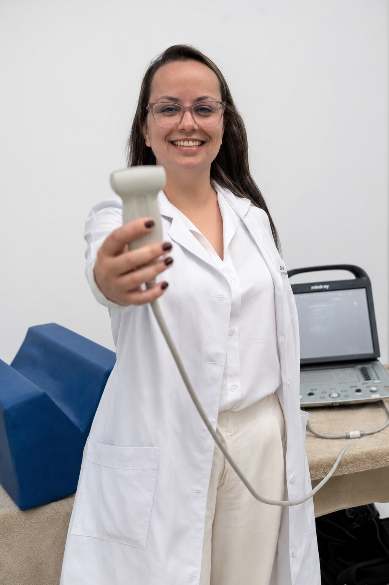
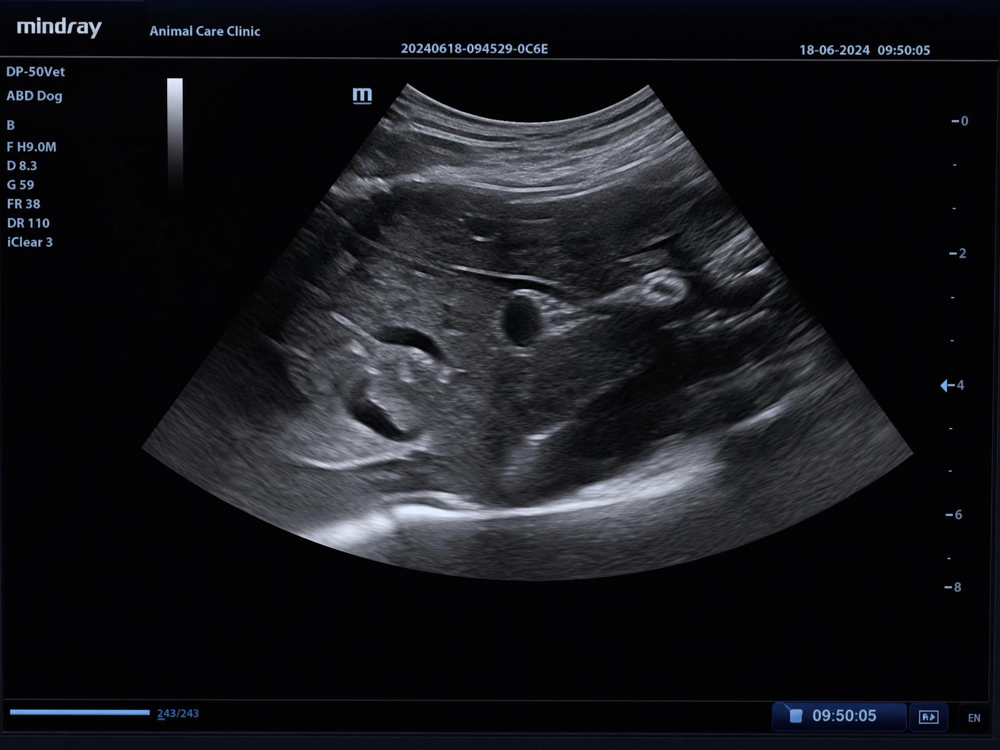
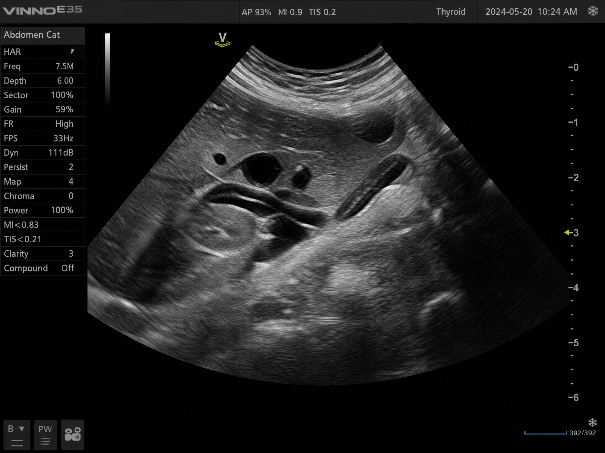

Medicina Veterinária
Dra. Bianca Fernandes Diagnóstico por Imagem
Especialista em ultrassonografia veterinária, oferecendo precisão e cuidado para o diagnóstico do seu pet.

A Profissional
Dedicada ao bem-estar animal através da tecnologia.
Com anos de experiência em Diagnóstico por Imagem, a Dra. Bianca Fernandes atua com foco em ultrassonografia volante e domiciliar.
Seu trabalho une a precisão técnica necessária para diagnósticos complexos com o carinho e paciência indispensáveis no trato com cães e gatos.
Serviços
01
Ultrassonografia Abdominal
Avaliação detalhada de todos os órgãos internos para detecção de patologias.
02
Atendimento Volante
Parceria com clínicas veterinárias para realização de exames no local.
03
Atendimento Domiciliar
Conforto total para o seu pet, realizando o exame no ambiente onde ele se sente seguro.
Exames Realizados
Tecnologia a serviço da vida

Ultrassom Canino

Ultrassom Felino

Diagnóstico Preciso